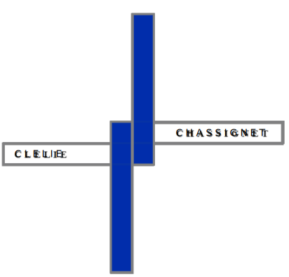

CLELIE
CHASSIGNET

Hello,
If you want to know a little bit ABOUT me or to download my french CV or english CV, feel free to click !
You can also contact me:cleliechassignet2@gmail.com
Or find me: Linkedin

Frieder Nake vs Mondrian
Processing - 2018

Computer from hell
Processing - 2018